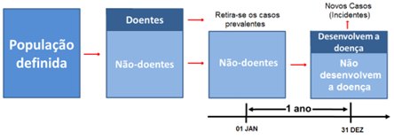
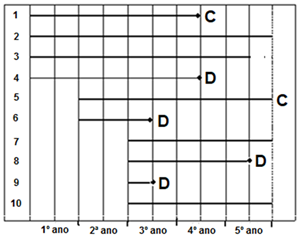

if (!requireNamespace("BiocManager", quietly = TRUE)) install.packages("BiocManager")
if (!requireNamespace("limma", quietly = TRUE)) BiocManager::install("limma")
pacman::p_load(BiocManager,
dplyr,
epiR,
epitools,
flextable,
knitr,
limma,
officer,
pROC,
readxl,
vcd)22 Medidas de ocorrência de doença
22.1 Pacotes necessários neste capítulo
22.2 Medidas de frequência
22.2.1 Prevalência
A prevalência, ou mais adequadamente, a prevalência pontual de uma doença é a proporção da população portadora da doença em um determinado ponto do tempo. É uma medida instantânea por excelência e fornece uma medida estática da frequência da doença. É também conhecida como taxa de prevalência e é expressa em percentagem ou por \(10^{n}\) habitantes. As medidas de prevalência geram informações úteis para o planejamento e administração de serviços de saúde.
A prevalência por período descreve os casos que estavam presentes em qualquer momento durante um determinado período de tempo. Diz o número total de casos de uma doença que se sabe haver existido durante um período de tempo.
Um tipo especial de prevalência de período é a prevalência ao longo da vida, que mede a frequência cumulativa ao longo da vida de um resultado até o momento presente (ou seja, a proporção de pessoas que tiveram o evento em qualquer momento no passado).
As doenças, quanto a sua duração, podem ser agudas e de longa duração ou crônicas. A prevalência é proporcional ao tempo de duração da doença. Hipoteticamente, se o surgimento de novos casos de doença ocorre em ritmo constante e igual para doenças agudas e crônicas, estas últimas acumularão casos, aumentando a prevalência. As doenças agudas tenderão a manter uma prevalência constante. A terapêutica, diminuindo o tempo de duração das doenças, também reduz a prevalência. A prevalência é dada pela razão:
\[prevalência = \frac{número \ de \ casos \ conhecidos \ da \ doença}{total \ da \ População} \times 10^{n}\]
22.2.1.1 Exemplo
Como exemplo, será verificada a frequência de tabagismo entre as puérperas da maternidade do HGCS. O banco de dados dadosMater.xlsx contém informação de 1368 nascimentos e pode ser consultado na Seção 5.6. Clique aqui para baixar e depois de salvar em seu diretório de trabalho, carregue-o com a função read_excel() do pacote readxl.
dados <- readxl::read_excel ("dados/dadosMater.xlsx")Inicialmente, será verificado quantas fumantes existem. O conjunto de dados contém uma variável fumo, onde 1 = fumante e 2 = não fumante. Portanto, há necessidade de transformar a variável numérica em um fator:
dados$fumo <- factor (dados$fumo,
ordered = TRUE,
levels = c(1,2),
labels = c("fumante", "não fumante"))
tabFumo <- with(data = dados, table(fumo))
addmargins(tabFumo, FUN = sum)fumo
fumante não fumante sum
301 1067 1368 Além de relatar a estimativa pontual da frequência da doença, é importante fornecer uma indicação da incerteza em torno dessa estimativa pontual. A função epi.conf(), do pacote epiR (1), permite calcular intervalos de confiança para prevalência, motivo da escolha dessa função.
A função epi.conf() usa os seguintes argumentos:
- dat \(\longrightarrow\) matriz ou tabela;
- ctype \(\longrightarrow\) tipo de intervalo de confiança a ser calculado. Opções: mean.single, mean.unpair, mean.pair, prop.single, prop.unpaired, prevalence, inc.risk, inc.rate, odds e smr (standardized mortality rate);
- method \(\longrightarrow\) método a ser usado. Quando
ctype = "inc.risk"ouctype = "prevalence", as opções sãoexact,wilsonefleiss. Quandoctype = "inc.rate", as opções sãoexactebyar; - N \(\longrightarrow\) tamanho da população;
- conf.level \(\longrightarrow\) magnitude do intervalo de confiança retornado. Deve ser um único número entre 0 e 1.
Construção da matriz
Com os dados da tabFumo, constrói-se uma matriz de duas colunas:
n1 <- tabFumo[1]
N1 <- tabFumo[1] + tabFumo[2]
mat1 <- as.matrix(cbind (n1, N1))
mat1 n1 N1
fumante 301 1368Cálculo da prevalência
Usando a função epi.conf(), tem-se:
epiR::epi.conf(mat1,
ctype = "prevalence",
method = "exact",
conf.level = 0.95) est lower upper
1 0.2200292 0.1983313 0.2429365A saída mostra que a prevalência de fumantes entre as puérperas do HGCS é igual a 22,0% (IC95%: 19,8 – 24,3%).
22.2.2 Incidência
A incidência fornece uma medida da frequência com que os indivíduos suscetíveis se tornam casos de doenças, à medida que são observados ao longo do tempo.
Um caso incidente ocorre quando um indivíduo deixa de ser suscetível e passa a ser doente. A contagem de casos incidentes é o número de tais eventos que ocorrem em uma população durante um período de acompanhamento definido. Existem duas maneiras de expressar a incidência:
A incidência cumulativa (risco) é a proporção de indivíduos inicialmente suscetíveis em uma população que se tornam novos casos durante um período de acompanhamento definido.
Para calcular a incidência cumulativa, é necessário primeiro identificar os doentes e após acompanhar por um determinado tempo os não doentes (Figura 22.1).

A taxa de incidência (densidade de incidência ou taxa de incidência) é o número de novos casos da doença que ocorrem por unidade de tempo em risco durante um período de acompanhamento definido. Este período é expresso como pessoas-tempo (pessoas-ano, por exemplo).
O conceito de pessoas-tempo pode ser ilustrado com o seguinte exemplo: a Figura 22.2 representa um estudo epidemiológico hipotético com duração de cinco anos, onde D é o desfecho e C representa os sujeitos que deixaram o estudo por migração ou morte (censurados) por causa não relacionada ao desfecho.

Nesse estudo hipotético, o indivíduo 1 permaneceu no estudo 3,5 anos; o indivíduo 2, ficou 5 anos; o indivíduo 3, 4,5 anos e, assim por diante, totalizando 32,5 pessoas-anos. Em outras palavras, ocorreram 4 desfechos durante os 5 anos do estudo, consequentemente, a taxa de incidência (TI) foi de
\[TI = \frac{4}{32,5} \times 1000 = \frac{123}{1000\ pessoas-ano} \]
Isto significa que se fossem acompanhadas 1000 pessoas por um ano, 123 delas apresentariam o desfecho D.
22.2.2.1 Exemplo
Aparentemente, pessoas cegas têm uma menor incidência de câncer e esse efeito parece ser mais pronunciado em pessoas totalmente cegas do que em pessoas com deficiência visual grave.
Para testar essa hipótese, foi identificada uma coorte de 1.567 pessoas totalmente cegas e 13.292 sujeitos com deficiência visual grave. As informações sobre a incidência de câncer foram obtidas do Registro Sueco de Câncer (2). Foram diagnosticados 136 casos de câncer em 22050 pessoas-ano em risco totalmente cegas e 1709 casos de câncer em 127650 pessoas-anos em risco com deficiência visual grave.
A taxa de incidência pode ser calculada, usando-se a mesma função epi.conf(), usada para o cálculo da prevalência, mudando o argumento ctype = “prevalence” para ctype = “inc.rate”, conforme recomendado:
Pessoas totalmente cegas
Inicialmente, constrói-se a matriz:
n2 <- 136
N2 <- 22050
mat2 <- as.matrix(cbind (n2, N2))
mat2 n2 N2
[1,] 136 22050Logo, a incidência de câncer nos totalmente cegos é:
epiR::epi.conf(mat2,
ctype = "inc.rate",
method = "exact",
conf.level = 0.95)*1000 est lower upper
n2 6.1678 5.174806 7.295817Pessoas com grave deficiência visual
Inicialmente, constrói-se a matriz:
n3 <- 1709
N3 <- 127650
mat3 <- as.matrix(cbind (n3, N3))
mat3 n3 N3
[1,] 1709 127650Logo, a incidência de câncer nos com grave deficiência visual é:
epiR::epi.conf(mat3,
ctype = "inc.rate",
method = "exact",
conf.level = 0.95)*1000 est lower upper
n3 13.38817 12.76088 14.03832As saídas mostram que para cada 1000 pessoas cegas (a função foi multiplicada por 1000) acompanhadas por um ano, ocorreram 6,2 (IC95%: 5,2 – 7,3) casos de câncer. Uma taxa de incidência, praticamente, metade da taxa de incidências das pessoas com deficiência visual grave. Os IC95% não são coincidentes, o que significa que essa diferença é significativa. Houve, na amostra, uma incidência menor de câncer entre os indivíduos totalmente cegos, sugerindo que a melatonina possa ser um fator protetor contra o câncer.
22.2.2.2 Relação entre prevalência e incidência
A incidência é uma medida de risco. A prevalência, por não levar em consideração o tempo de duração da doença (t), não tem esta capacidade. Em uma população onde a situação da doença encontra-se em estado estacionário (ou seja, sem grandes migrações ou mudanças ao longo do tempo na incidência/prevalência), a relação entre prevalência e incidência e duração da doença pode ser expressa pela seguinte fórmula (3):
\[prevalência \ pontual = incidência \times duração \ da \ doença \ (t)\]
Por exemplo, se a incidência da doença for de 0,8% ao ano e sua duração média (sobrevida após o diagnóstico) for de 10 anos, a prevalência pontual será de aproximadamente 8%.
22.3 Medidas de associação
22.3.1 Odds Ratio
Odds Ratio (OR) é a razão entre dois odds. A Odds Ratio, traduzida como Razão de Chances, está associada, usualmente, com estudos retrospectivos tipo caso-controle com desfechos dicotômicos.
A odds ratio (OR) expressa a odds de exposição entre os que têm o desfecho (casos) pela odds de exposição nos livres de desfecho (controles).
Exposição | Com Doença | Sem Doença | Total |
|---|---|---|---|
Expostos | a | b | a + b |
Não Expostos | c | d | c + d |
Total | a + c | b + d | a + b + c + d |
Usando a Tabela 22.1, a fórmula \(odds =\frac{p}{1 -p}\) e que
\[p_{exp \ doentes} = \frac{a}{a+c}\]
\[p_{exp \ não \ doentes} = \frac{b}{b+d}\] tem-se:
\[odds_{exp} \ {casos} = \frac{\frac{a}{a+c}}{1- \frac{a}{a+c}}=\frac{a}{c}\]
\[odds_{exp} \ {controles} = \frac{\frac{b}{b+d}}{1- \frac{b}{b+d}}=\frac{b}{d}\]
Portanto, a OR é igual a:
\[OR = \frac{odds_{exp}\ {casos}}{odds_{exp}\ {controles}}=\frac{\frac{a}{c}}{\frac{b}{d}}=\frac{a \times d}{c \times b} \]
Em decorrência da última fórmula, a OR é definida como a razão dos produtos cruzados em uma tabela de contingência 2×2.
22.3.1.1 Exemplo
Cenário
Em um estudo de caso-controle hipotético, a distribuição das exposições entre os casos e um grupo de pessoas saudáveis (“controles”) é comparada entre si. Os casos correspondem a um tipo raro de câncer, onde se suspeita que exista uma associação à exposição a um determinado fator de risco.
Os dados desse estudo hipotético estão no arquivo dadosCasoControle.xlsx. O conjunto de dados pode ser obtido aqui. Depois de salvo em seu diretório de trabalho, ele pode ser carregado com a função read_excel() do pacote readxl.
cc <- readxl::read_excel ("dados/dadosCasoControle.xlsx")As variáveis cc$exposto e cc$desfecho devem ser transformadas em fatores e na ordem sim, não, uma vez que o R coloca em ordem alfabética (não, sim):
cc$exposto <- factor (cc$exposto,
levels = c("sim", "não"))
cc$desfecho <- factor (cc$desfecho,
levels = c("sim", "não"))Após essa etapa, construir uma tabela \(2 \times 2\):
tab_cc <- table (cc$exposto,
cc$desfecho,
dnn = c("Exposição", "Desfecho"))
addmargins(tab_cc) Desfecho
Exposição sim não Sum
sim 48 20 68
não 12 40 52
Sum 60 60 120A OR será obtida utilizando a função epi.2by2() do pacote epiR (1). Esta função tem os seguintes argumentos:
- dat \(\longrightarrow\) tabela de contingência \(2 \times 2\);
- method \(\longrightarrow\) as opções são “cohort.count”, “cohort.time”, “case.control” ou “cross.sectional”;
- conf.level \(\longrightarrow\) padrão = 0.95;
- units \(\longrightarrow\) multiplicador para incidência e prevalência;
- outcome \(\longrightarrow\) indicação de como a variável desfecho é representada na tabela de contingência (“as.columns” ou “as.rows”).
epiR::epi.2by2(tab_cc,
method = "case.control",
conf.level = 0.95,
units = 100,
outcome = "as.columns") Outcome+ Outcome- Total Odds
Exposed + 48 20 68 2.40 (1.43 to 4.23)
Exposed - 12 40 52 0.30 (0.13 to 0.53)
Total 60 60 120 1.00 (0.69 to 1.45)
Point estimates and 95% CIs:
-------------------------------------------------------------------
Exposure odds ratio 8.00 (3.49, 18.34)
Attrib fraction (est) in the exposed (%) 87.50 (71.51, 94.51)
Attrib fraction (est) in the population (%) 70.00 (63.46, 81.10)
E-value 5.10 (3.14, NA)
-------------------------------------------------------------------
Uncorrected chi2 test that OR = 1: chi2(1) = 26.606 Pr>chi2 = <0.001
Fisher exact test that OR = 1: Pr>chi2 = <0.001
Wald confidence limits
CI: confidence interval A saída exibe os dados em uma tabela \(2 \times 2\), mostrando as odds e os IC95% e outras estatísticas epidemiológicas relacionadas.
A OR varia de zero ao infinito. Quando o valor da OR se aproxima de 1, a doença e o fator de risco não estão associados. Acima de 1 significa que existe associação e valores menores de 1 indicam uma associação negativa (efeito protetor).
No exemplo hipotético, os indivíduos que se expuseram ao fator de risco têm uma chance 8 vezes maior de apresentar este tipo de câncer. O valor p do qui-quadrado é altamente significativo (p < 0,001).
22.3.2 Risco Relativo
O Risco relativo (RR) é a razão entre a incidência de desfecho em indivíduos expostos e a incidência de desfecho em indivíduos não expostos. O RR estima a magnitude da associação entre a exposição e o desfecho (doença). Em outras palavras, compara a probabilidade de ocorrência do desfecho entre os indivíduos expostos com a probabilidade de ocorrência do desfecho nos indivíduos não expostos.
A partir da tabela de contingência \(2 \times 2\) ( Tabela 22.1), tem-se que o estimador do RR é dado por:
\[RR = \frac{incidência_{exp}}{incidência_{não \ exp}}=\frac{\frac{a}{a + b}}{\frac{c}{c + d}} \]
22.3.2.1 Exemplo
Cenário
Em 18 de abril de 1940, ocorreu um surto de gastroenterite, após um jantar, em uma igreja (Figura 22.3), na vila de Lycoming, Condado de Oswego, Nova York. Das 80 pessoas que compareceram ao jantar, 46 das 75 entrevistadas desenvolveram posteriormente doença gastrointestinal aguda. Devido à sua natureza direta, o incidente tornou-se um estudo de caso de ensino padrão para gerações de epidemiologistas.
As taxas de ataque (incidência) foram calculadas para aqueles que comeram e não comeram cada um dos 14 itens alimentares consumidos na ceia (4). O pacote epitools (5) contém os dados desta investigação no arquivo oswego.
data(oswego)
str(oswego)'data.frame': 75 obs. of 21 variables:
$ id : int 2 3 4 6 7 8 9 10 14 16 ...
$ age : int 52 65 59 63 70 40 15 33 10 32 ...
$ sex : chr "F" "M" "F" "F" ...
$ meal.time : chr "8:00 PM" "6:30 PM" "6:30 PM" "7:30 PM" ...
$ ill : chr "Y" "Y" "Y" "Y" ...
$ onset.date : chr "4/19" "4/19" "4/19" "4/18" ...
$ onset.time : chr "12:30 AM" "12:30 AM" "12:30 AM" "10:30 PM" ...
$ baked.ham : chr "Y" "Y" "Y" "Y" ...
$ spinach : chr "Y" "Y" "Y" "Y" ...
$ mashed.potato : chr "Y" "Y" "N" "N" ...
$ cabbage.salad : chr "N" "Y" "N" "Y" ...
$ jello : chr "N" "N" "N" "Y" ...
$ rolls : chr "Y" "N" "N" "N" ...
$ brown.bread : chr "N" "N" "N" "N" ...
$ milk : chr "N" "N" "N" "N" ...
$ coffee : chr "Y" "Y" "Y" "N" ...
$ water : chr "N" "N" "N" "Y" ...
$ cakes : chr "N" "N" "Y" "N" ...
$ vanilla.ice.cream : chr "Y" "Y" "Y" "Y" ...
$ chocolate.ice.cream: chr "N" "Y" "Y" "N" ...
$ fruit.salad : chr "N" "N" "N" "N" ...Existem 75 observações de 21 variáveis, algumas características dos indivíduos como idade, sexo, etc. Importante para a análise é a variável ill (Y – sim, doente; N – não doente) e a variáveis relacionadas aos alimentos ingeridos durante o jantar na igreja. O sorvete de baunilha foi considerado o principal responsável pelo surto.
A seguir, as variáveis oswego$vanilla.ice.cream e oswego$ill 1 serão transformadas em fator e os níveis colocados na ordem Y, N, uma vez que o R coloca em ordem alfabética (N, Y) :
1 Foi mantido o nome das variáveis em inglês, pois no banco de dados oswego elas estão nessa língua.
oswego$ill <- factor (oswego$ill,
levels = c ("Y", "N"))
oswego$vanilla.ice.cream <- factor (oswego$vanilla.ice.cream,
levels = c ("Y", "N"))Realizada essa etapa, será construída uma tabela para o cálculo do RR:
tab_vanilla <- table (oswego$vanilla.ice.cream,
oswego$ill,
dnn = c ("Vanilla", "Ill"))
tab_vanilla Ill
Vanilla Y N
Y 43 11
N 3 18O RR será obtido, utilizando a função epi.2by2() do pacote epiR, cujos argumentos foram mostrados no cálculo da OR, mudando a tabela para tab_vanilla e method = “cohort.count”:
epiR::epi.2by2(tab_vanilla,
method = "cohort.count",
conf.level = 0.95,
units = 100,
outcome = "as.columns") Outcome+ Outcome- Total Inc risk *
Exposure+ 43 11 54 79.63 (66.47 to 89.37)
Exposure- 3 18 21 14.29 (3.05 to 36.34)
Total 46 29 75 61.33 (49.38 to 72.36)
Point estimates and 95% CIs:
-------------------------------------------------------------------
Inc risk ratio 5.57 (1.94, 16.03)
Inc odds ratio 23.45 (5.84, 94.18)
Attrib risk in the exposed * 65.34 (46.92, 83.77)
Attrib fraction in the exposed (%) 82.06 (55.87, 93.79)
Attrib risk in the population * 47.05 (28.46, 65.63)
Attrib fraction in the population (%) 76.71 (49.78, 93.83)
E-value 10.62 (3.29, NA)
-------------------------------------------------------------------
Uncorrected chi2 test that OR = 1: chi2(1) = 27.223 Pr>chi2 = <0.001
Fisher exact test that OR = 1: Pr>chi2 = <0.001
Wald confidence limits
CI: confidence interval
* Outcomes per 100 population units Os resultados da saída indicam que os indivíduos que ingeriram sorvete de baunilha (n = 54) tiveram um risco maior de desenvolver gastrenterite aguda quando comparado aos que não ingeriram (n = 21). Dividindo o risco dos indivíduos expostos (incidência = 79,6%) pelo risco dos não expostos (incidência = 14,3%), encontra-se o RR = 5,57. Isso confirma que o sorvete de baunilha foi o principal responsável.
Quanto maior o RR mais forte é a associação entre a doença em questão e a exposição ao fator de risco. Um RR = 1 indica que a doença e a exposição ao fator de risco não estão associadas. Valores < 1 indicam uma associação negativa entre o fator de risco e a doença (efeito protetor).
22.3.3 Odds Ratio vs Risco Relativo
A OR não deve ser entendida como uma medida aproximada do RR, exceto para doenças raras (doenças, em geral com prevalência menor do que 10%). Caso contrário, a OR tenderá a superestimar a magnitude da associação e o OR afasta-se da hipótese nula da não associação (OR = 1), independentemente de ser um fator de risco ou de proteção. A discrepância (d)2 entre as estimativas do RR e OR pode ser definido como a razão entre o OR e o RR estimados (6). Em outras palavras, a discrepância corresponde a uma proporção do RR (7).
2 em inglês, built-in bias
\[d = \frac {1- p_{não \ exp}}{1- p_{exp}}= \frac{\frac{c}{c + d}}{\frac{a}{a + b}}\]
Logo,
\[OR = RR \times d\]
Para finalizar, uma comparação entre OR e RR é mostrada na Tabela 22.2 (8).
OR | RR | Magnitude |
|---|---|---|
1,0 | 1,0 | insignificante |
1,5 | 1,2 | pequena |
3,5 | 1,9 | moderada |
9,0 | 3,0 | grande |
32 | 5,7 | muito grande |
360 | 19 | quase perfeita |
infinito | infinito | perfeita |
22.3.4 Razão de Prevalência
Quando dados transversais estão disponíveis, muitas vezes as associações são avaliadas, usando a razão de prevalência pontual (RPP).
Tendo o mesmo princípio das duas medidas anteriores, a razão de prevalência (RPP) compara a prevalência do desfecho entre os expostos com a prevalência do desfecho entre os não expostos.
Matematicamente, a RPP é calculada de maneira semelhante ao RR. Apenas, deve-se ter em mente que o desfecho e a exposição foram medidos no mesmo momento, enquanto para o cálculo do RR há necessidade de calcular a incidência.
Tomando como base a estrutura da tabela de contingência 2 x 2 , Tabela 22.1, tem-se:
\[RPP = \frac{prevalência \ de \ doença_{exp}}{prevalência \ de \ doença_{não \ exp}}=\frac{\frac{a}{a + b}}{\frac{c}{c + d}} \]
Também é possível verificar a prevalência de exposição entre doentes e não doentes:
\[RPP = \frac{prevalência \ de \ exposição_{doentes}}{prevalência \ de \ exposição_{não \ doentes}}=\frac{\frac{a}{a + c}}{\frac{b}{b + d}} \]
22.3.4.1 Exemplo
Cenário
Em um estudo transversal (9), foi verificada a prevalência de infecções congênitas entre as puérperas com idade igual ou acima de 20 anos comparadas às mulheres com menos de 20 anos (adolescentes). A hipótese foi de que as adolescentes tinham uma prevalência maior de infecções.
Parte dos dados estão no arquivo dadosMater.xlsx, que contém, como já mencionado, informações de 1368 nascimentos. Entre essas, tem-se a idade das mães (idade_mae) e se foi diagnosticada infecção congênita (inf_cong).
O arquivo pode ser obtido aqui. Depois de salvo em seu diretório de trabalho, ele pode ser carregado com a função read_excel() do pacote readxl.
dados <- readxl::read_excel ("dados/dadosMater.xlsx")A partir da variável idade_mae, criar a variável faixaEtaria, dividindo as parturientes em menores de 20 anos (adolescentes) e ≥ 20 anos. Para isso, usou-se a função cut() do pacote base. Revise os argumentos desta função.
dados$faixaEtaria <- cut (dados$idade_mae,
breaks=c(13,20,46),
labels = c("<20a","=>20a"),
right = FALSE,
include.lowest = TRUE)A variável inf_cong encontra-se como uma variável numérica e deve ser transformada em fator:
dados$inf_cong <- factor (dados$inf_cong,
ordered = TRUE,
levels = c (1,2),
labels = c ("sim", "não"))Após estes procedimentos, constrói-se uma tabela \(2 \times 2\):
tab_infCong <- table(dados$faixaEtaria,
dados$inf_cong,
dnn = c("Faixa Etária", "Inf. Cong."))
addmargins(tab_infCong) Inf. Cong.
Faixa Etária sim não Sum
<20a 7 212 219
=>20a 119 1030 1149
Sum 126 1242 1368Cálculo da RPP
Usando a tabela tab_infCong com a função epi.2by2() do pacote epiR, cujos argumentos foram mostrados no cálculo da OR e RR, e mudando a tabela para tab_infCong e method = “cross.sectional”, obtem-se:
epiR::epi.2by2(tab_infCong,
method = "cross.sectional",
conf.level = 0.95,
units = 100,
outcome = "as.columns") Outcome+ Outcome- Total Prev risk *
Exposure+ 7 212 219 3.20 (1.29 to 6.47)
Exposure- 119 1030 1149 10.36 (8.65 to 12.26)
Total 126 1242 1368 9.21 (7.73 to 10.87)
Point estimates and 95% CIs:
-------------------------------------------------------------------
Prev risk ratio 0.31 (0.15, 0.65)
Prev odds ratio 0.29 (0.13, 0.62)
Attrib prev in the exposed * -7.16 (-10.08, -4.24)
Attrib fraction in the exposed (%) -224.02 (-577.43, -57.46)
Attrib prev in the population * -1.15 (-3.48, 1.19)
Attrib fraction in the population (%) -12.45 (-12.85, -11.96)
E-value 5.93 (NA, 2.44)
-------------------------------------------------------------------
Uncorrected chi2 test that OR = 1: chi2(1) = 11.278 Pr>chi2 = <0.001
Fisher exact test that OR = 1: Pr>chi2 = <0.001
Wald confidence limits
CI: confidence interval
* Outcomes per 100 population units A saída exibe várias informações. Foi feita a hipótese de uma maior prevalência entre as mulheres com menos de 20 anos. Por este motivo, elas aparecem como as expostas (Exposed +) e tem uma prevalência de 3,20/100, enquanto as mulheres com mais de 20 anos tiveram uma prevalência de 10,36/100. Isto mostra que a razão de prevalência é igual a 0,31 (IC95%: 0,15-0,65)3, ou seja, abaixo de 1, sugerindo que ao contrário da hipótese inicial, as adolescentes têm, neste estudo, uma menor prevalência de infecções congênitas.
3 Observem que todo o intervalo de confiança de 95% encontra-se abaixo de 1, indicando que existe significância estatística.
22.4 Medidas de impacto
22.4.1 Risco Atribuível
O Risco Atribuível (RA) possui características de medida de impacto. O RA, ao invés de concentrar-se na associação em si, refere-se mais às consequências e às repercussões da exposição sobre a ocorrência do desfecho.
O RA é a medida do excesso ou acréscimo absoluto de risco que pode ser atribuído à exposição (10). Com o RA é possível estimar o número de casos que podem ser prevenidos se a exposição for eliminada e assim estimar a magnitude do impacto, em termos de saúde pública, imposto por esta exposição.
O risco de desenvolver o desfecho (incidência) está aumentado em RA nos indivíduos expostos em comparação com os que não estão expostos. Nos estudos de coorte, costuma-se usar mais a expressão Risco Atribuível ou Diferença de Risco. Nos ensaios clínicos, usa-se mais a expressão Redução Absoluta do Risco (RAR), pois se espera que a intervenção reduza o risco.
Calcula-se o RA ou a RAR pela diferença absoluta entre as incidências dos expostos e não expostos:
\[RA = \left|I_{expostos} - I_{não \ expostos}\right|\]
Utilizando a tabela de contingência \(2 \times 2\) ( Tabela 22.1), o RA fica expresso da seguinte maneira:
\[RA = \left|\frac{a}{a + b} -\frac{c}{c + d}\right|\]
No exemplo do Risco Relativo, o RA pode ser calculado usando a mesma tabela de contingência, repetida aqui para facilitar a leitura (Tabela 22.3):
Desfecho (+) | Desfecho (-) | Total | |
|---|---|---|---|
Comeu sorvete | 43 | 11 | 54 |
Não comeu | 3 | 18 | 21 |
Logo,
\[RA = \left|\frac{43}{43 + 11} -\frac{3}{3 + 18}\right| = \left|0,796 - 0,143\right| = 0,653\]
O risco atribuível na exposição mede o excesso de risco associado a uma determinada categoria de exposição. Por exemplo, com base no exemplo, a incidência cumulativa de gastrenterite aguda entre os indivíduos que comeram o sorvete de baunilha é de 79,6% e para os que não ingeriram o sorvete (categoria de referência ou não exposta) foi de 14,3%. Desta forma, o risco excessivo associado à exposição 79,6 – 14,3 = 65,3%. Ou seja, assumindo uma associação causal (sem confusão ou viés), a não ocorrência da festa diminuiria o risco no grupo exposto de 79,6% para 14,3%.
O RA expresso em relação à incidência nos expostos e apresentado em percentual é denominado de Risco Atribuível Proporcional (RAP) ou Fração Atribuível nos Expostos.
O RAP informa qual a proporção de desfecho, expresso em percentagem, entre os expostos que poderia ter sido prevenida se a exposição fosse eliminada. É dado pela fórmula:
\[RAP = \left(\frac{I_{expostos} - I_{não \ expostos}}{I_{expostos}}\right) \times 100\]
No exemplo do surto de gastrenterite aguda no jantar da igreja de Oswego (Seção 22.3.2), tem-se:
\[RAP = \left(\frac{0,796 - 0,143}{0,796}\right) \times 100 = 82,06 \%\]
Se a causalidade foi estabelecida, essa medida pode ser interpretada como a porcentagem do risco total de gastrenterite aguda que é atribuível à ingesta de sorvete de baunilha.
Outra maneira de se chegar a este mesmo resultado é através do RR, usando a seguinte fórmula
\[RAP = \left(\frac{I_{expostos} - I_{não \ expostos}}{I_{expostos}}\right) \times 100\]
\[RAP = \left(\frac{I_{expostos}}{I_{expostos}} - \frac{I_{não \ expostos }}{I_{expostos}}\right) \times 100\]
\[RAP = \left(1 - \frac{1}{\frac{I_{expostos }}{I_{não \ expostos}}}\right) \times 100\]
\[RAP = \left(1 - \frac{1}{RR}\right) \times 100\]
\[RAP = \left(\frac{RR - 1}{RR}\right) \times 100\]
No exemplo, o RR é igual a 5,57, logo:
\[RAP = \left(\frac{5,57 - 1}{5,57}\right) \times 100 = 82,05\%\]
22.4.2 Redução Relativa do Risco
Quando se avalia um tratamento ou alguma intervenção em que se suponha haver uma redução do risco — por exemplo, o uso da aspirina para reduzir a ocorrência de infarto agudo do miocárdio —, o termo Risco Atribuível é substituído por Redução do Risco Atribuível e é calculado da mesma forma apresentada na equação do Risco Atribuível.
Neste caso, ao invés de usar o Risco Atribuível Proporcional (RAP), onde se pressupõe que a exposição é um fator de risco para a doença e o RR \(>\) 1, usa-se a Redução Relativa do Risco, pois a exposição é supostamente um fator protetor, como se espera que ocorra nos ensaios clínicos.
Esta medida, análoga ao RAP, é também chamada de Eficácia, definida como a proporção da incidência nos indivíduos não tratados (por exemplo, o grupo controle) que é reduzida pela intervenção (11).
O cálculo da Redução Relativa do Risco (RRR) é semelhante ao Risco Atribuível Proporcional (RAP), onde a incidência nos expostos é a incidência no grupo que recebeu a intervenção (ou taxa de eventos no grupo tratamento) e a incidência nos não expostos é incidência nos controles (ou taxa de eventos nos controles – TEC). Como se supõe que a incidência nos controles seja maior que a incidência no grupo de tratamento, a equação fica:
\[RRR = \left(\frac{I_{controle} - I_{tratamento}}{I_{controle}}\right) \times 100\]
Alternativamente, a RRR pode ser estimada pela equação:
\[RRR = \left(1 - RR\right) \times 100\]
O Physicians’ Health Study (12) é um ensaio clinico randomizado controlado, duplo cego, desenhado com o objetivo de determinar se uma dose baixa de aspirina (325 mg a cada 48 horas) diminui a mortalidade cardiovascular e se o betacaroteno reduz a incidência de câncer. Participaram deste estudo 22071 indivíduos por uma média de 60,2 meses.
O estudo do componente aspirina mostrou os seguintes resultados (Tabela 22.4):
Eventos por ano | |||
|---|---|---|---|
Grupo | IAM | Sem_IAM | Total |
Aspirina | 139 | 10.898 | 11.037 |
Placebo | 239 | 10.795 | 11.034 |
A incidência cumulativa de Infarto Agudo de Miocárdio (IAM) em ambos os grupos foi:
\[Incidencia_{aspirina} = \frac{139}{11037} = 0,0126\]
\[Incidencia_{placebo} = \frac{239}{11034} = 0,0217\]
\[RR = \frac{0,0126}{0,0217} = 0,58\]
Logo, a RRR é igual a:
\[RRR = \left(1 - 0,58\right) \times 100 = 42\%\]
Ou seja, houve uma redução de 42% no risco de IAM no grupo que usou aspirina e a conclusão dos autores foi que este ensaio clínico demonstrou, em relação à prevenção primária de doença cardiovascular, uma diminuição no risco de IAM.
Estes cálculos podem ser realizados com a função risks() do pacote MKmisc (13). Esta função calcula o risco relativo (RR), odds ratio (OR), redução relativa do risco (RRR) e outras estatísticas epidemiológicas, como RAR, NNT.
A função risks() usa como argumento:
- p0 \(\longrightarrow\) incidência do desfecho de interesse no grupo não exposto;
- p1 \(\longrightarrow\) incidência do desfecho de interesse no grupo exposto.
Além disso, para o seu funcionamento, deve-se ter instalado o pacote BiocManager para poder instalar o pacote limma, necessário para a execução do pacote MKmisc. Veja início do capítulo em pacotes usados neste capítulo.
A função risks() será usada dentro da função round() para reduzir o número de dígitos decimais:
p0 <- 0.0217
p1 <- 0.0126
round(MKmisc::risks(p0,p1), 4) p0 p1 RR OR RRR ARR NNT
0.0217 0.0126 0.5806 0.5753 0.4194 0.0091 109.8901 22.4.3 Número Necessário para Tratar
Os resultados da função risks() entregam junto o Número Necessário para Tratar (NNT) que deve ser arredondado para o número inteiro mais próximo (no caso, 110) e significa a estimativa do número de indivíduos que devem receber uma intervenção terapêutica, durante um período específico de tempo, para evitar um efeito adverso ou produzir um desfecho positivo.
O NNT equivale à recíproca do RAR (Redução Absoluta do Risco ou Diferença de Risco):
\[NNT = \frac{1}{RAR} = \frac{1}{I_{não \ expostos} - I_{expostos}}\]
No exemplo do Physicians’ Health Study (12), o RAR é igual a:
\[RA = \left|I_{expostos} - I_{não \ expostos}\right| = \left|0,0126 - 0,0217\right| = 0,0091\]
\[NNT = \frac{1}{0,0091} = 109,89 \simeq 110\]
Pode-se calcular os IC95%, calculando o NNT para os limites do RAR usando a seguinte equação (14):
\[IC_{95\%} \longrightarrow RAR \pm z_{\left({1 - \frac{\alpha}{2}}\right)} \times EP_{RAR}\] Onde,
\[EP_{RAR} = \sqrt{\frac{p0\left(1 - p0\right)}{n_{1}}+\frac{p1\left(1 - p1\right)}{n_{2}}}\]
Usando esses dados, pode-se criar um script no RStudio para os cálculos:
Vetor dos dados
a <- 139
b <- 10898
c <- 239
d <- 10795
dados <- c (a, b, c, d)Matriz dos dados4
4 Aproveite para revisar como construir matriz
mat_iam <- matrix (dados, byrow = TRUE, nrow = 2)
tratamento <- c ("aspirina", "placebo")
desfecho <- c ("IAM", "s/IAM")
rownames (mat_iam) <- tratamento
colnames (mat_iam) <- desfecho
mat_iam IAM s/IAM
aspirina 139 10898
placebo 239 10795Cálculo das incidências no grupo tratamento e no grupo placebo
Na matriz o que está entre colchetes [1,1] significa: linha 1 e coluna 1, ou seja, o valor 139.
n1 <-mat_iam [1,1] + mat_iam [1,2]
n1[1] 11037p1 <- mat_iam [1,1] / n1
round (p1, 4)[1] 0.0126n0 <- mat_iam [2,1] + mat_iam [2,2]
n0[1] 11034p0 <- mat_iam [2,1] / n0
round (p0, 4)[1] 0.0217Os resultados da matriz de dados e o cálculo das incidências p0 (incidência no grupo placebo) e p1 (incidência no grupo de tratamento) já eram conhecidos e foram repetidos apenas para entrar na programação do cálculo do IC95%.
Cálculo do erro padrão da RAR
RAR <- abs(p0 - p1)
NNT <- 1/RAR
alpha <- 0.05
z <- qnorm (1 - (alpha/2))
round (z, 3)[1] 1.96EP_RAR <- sqrt((((p0*(1-p0)) / n0)) + (((p1*(1-p1)) / n1)))
# Limite inferior
li_RAR <- RAR - (z * EP_RAR)
round (li_RAR, 4)[1] 0.0056# Limite superior
ls_RAR <- RAR + (z * EP_RAR)
round (ls_RAR, 4)[1] 0.0125round(c(li_RAR, RAR, ls_RAR), 4)[1] 0.0056 0.0091 0.0125Portanto, a Redução Absoluta do Risco foi igual a 0,0091 (IC95%: 0,0056-0,0125). A partir destes resultados, pode-se calcular o intervalo de confiança para o NNT:
li_NNT <- 1/ls_RAR
ls_NNT <- 1/li_RAR
li_NNT [1] 80.07881ls_NNT[1] 177.1497Concluindo, o uso da aspirina no Physicians’ Health Study reduziu o risco de infarto agudo do miocárdio em 42% (RRR), ou seja, foi eficaz. Por outro lado, para ter este impacto será necessário tratar 110 (IC95%: 80-177) pacientes para que um tenha benefício. Este NNT é grande; o ideal é um NNT < 10. Apesar disso, como a aspirina tem baixo custo e seus benefícios suplantam os efeitos adversos, seu uso pode estar justificado.
22.4.4 Número Necessário para Causar Dano
Deve-se comparar o NNT com o Número Necessário para causar Dano (NND), em inglês, Number Needed to Harm (NNH). Deve ser interpretado como o número de pacientes tratados para que um deles apresente um efeito adverso.
O NND é calculado pela recíproca do aumento absoluto do risco (ARA), equivalente a diferença de risco ou redução absoluta do risco:
\[NND = \frac{1}{ARA} = \frac{1}{I_{expostos} - I_{não \ expostos}}\]
22.4.4.1 Exemplo
No Physicians’ Health Study (12) sobre o uso de aspirina na prevenção de IAM, foi verificado também os efeitos colaterais da aspirina, como acidentes vasculares cerebrais (AVC), Tabela 22.5.
Eventos por ano | |||
|---|---|---|---|
Grupo | AVC | Sem_AVC | Total |
Aspirina | 119 | 10.918 | 11.037 |
Placebo | 98 | 10.936 | 11.034 |
Cálculo das incidências
p0 <- 98/11034
round(p0, 4)[1] 0.0089p1 <- 119/11037
round(p1, 4)[1] 0.0108Para o cálculo do NND, usa-se a função risks(), como mencionado antes:
p0 <- 0.0089
p1 <- 0.0108
round (MKmisc::risks (p0, p1), 4) p0 p1 RR OR RRI ARI NNH
0.0089 0.0108 1.2135 1.2158 0.2135 0.0019 526.3158 Os resultados mostram que o NND5 é igual a 526. Ou seja, para evitar um IAM há necessidade de tratar 110 pacientes e a cada 526 tratados espera-se um caso de AVC, havendo um benefício bem maior quando comparado ao risco de AVC.
5 Em inglês, NNH (number needed to harm).
Referências
1.
Stevenson M, Sergeant E, et al. epiR: Tools for the Analysis of Epidemiological Data [Internet]. 2022. Disponível em: https://CRAN.R-project.org/package=epiR
2.
Feychting M, Osterlund B, Ahlbom A. Reduced cancer incidence among the blind. Epidemiology. 1998;9(5):490–4.
3.
Szklo M, Nieto FJ. Measuring Disease Occurrence. Em: Epidemiology: beyond the basics. Fourth Edition. Burlington, MA: Jones & Bartlett Learning; 2019. p. 80–1.
4.
Gross M. Oswego County revisited. Public health reports. 1976;91(2):168.
5.
Aragon TJ. epitools: Epidemiology Tools [Internet]. 2020. Disponível em: https://CRAN.R-project.org/package=epitools
6.
Szklo M, Nieto FJ. Measuring Associations Between Exposures and Outcomes. Em: Epidemiology: beyond the basics. Fourth Edition. Burlington, MA: Jones & Bartlett Learning; 2019. p. 88–94.
7.
Davies HTO, Crombie IK, Tavakoli M. When can odds ratios mislead? BMJ. 1998;316(7136):989–91.
8.
Hopkins WG. A Scale of Magnitudes for Effect Statistics [Internet]. A New View of Statistics. Sportscience; 2016. Disponível em: http://www.sportsci.org/resource/stats/index.html
9.
Madi JM, Souza R da S de, Araujo BF de, Oliveira Filho PF, et al. Prevalence of toxoplasmosis, HIV, syphilis and rubella in a population of puerperal women using Whatman 903 filter paper. The Brazilian Journal of Infectious Diseases. 2010;14(1):24–9.
10.
Szklo M, Nieto FJ. Measuring Associations Between Exposures and Outcomes. Em: Epidemiology: beyond the basics. Fourth Edition. Burlington, MA: Jones & Bartlett Learning; 2019. p. 84–102.
11.
Szklo M, Nieto FJ. Measuring Associations Between Exposures and Outcomes. Em: Epidemiology: beyond the basics. Fourth Edition. Burlington, MA: Jones & Bartlett Learning; 2019. p. 97–8.
12.
Physicians’ Health Study Research Group* SC of the. Final report on the aspirin component of the ongoing Physicians’ Health Study. New England Journal of Medicine. 1989;321(3):129–35.
13.
Kohl M. Package «MKmisc» [Internet]. 2019. Disponível em: https://github.com/stamats/MKmisc
14.
Bender R. Calculating confidence intervals for the number needed to treat. Controlled clinical trials. 2001;22(2):102–10.